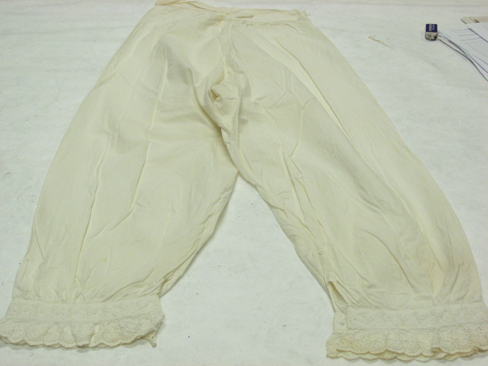
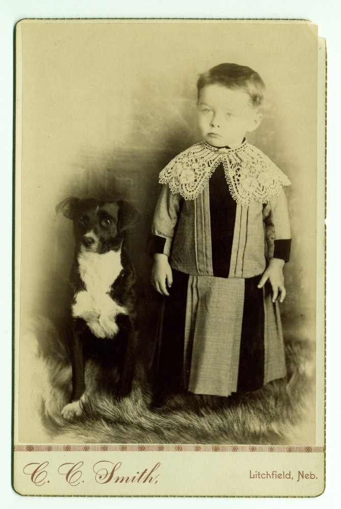
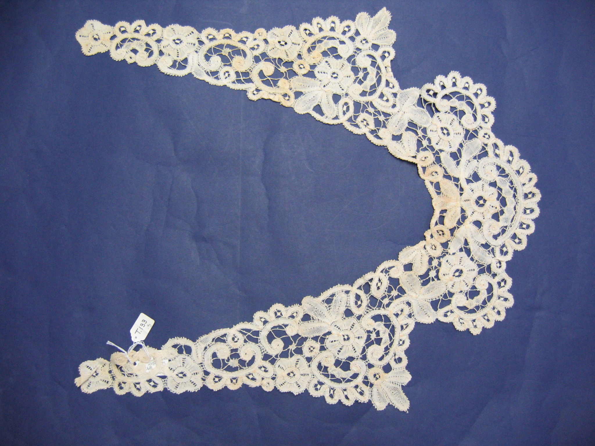

Handcrafted Broderie Anglaise & Heirloom Whitework
Dedicated to the rare, poetic art of nineteenth-century cutwork embroidery. On whisper-light Swiss cotton batiste and Irish cambric linen, our master embroiderers pierce, bind, and scallop openwork florals that capture the sublime romance of Victorian couture.


The Alchemy of Pierced & Bound Eyelets
Unlike modern chemical lace or machine-punched perforations that fray after three washings, genuine Broderie Anglaise is an architectural feat of tension and thread binding.
- Each open eyelet is pierced with a polished bone stiletto, gently separating fabric threads without cutting fibers.
- Dense buttonhole or overcast stitches bind the circular rim, locking tension permanently into the ground cloth.
- Raised satin stitch flower petals and dimensional French knot stamens create tactile sculptural relief.
- Scalloped hem borders are reinforced with heavy tracing cords before razor-sharp manual cutwork finishing.
Four Pillars of Broderie Architecture
From romantic high-neck Edwardian tea blouses to floor-sweeping scalloped eyelet gowns, each bespoke piece represents months of needlework discipline.

Heirloom CollarThe Victorian Whitework Collar
Hand-scalloped detachable collar featuring intricate floral cutwork rosettes and delicate needle-lace bridge bars.
View Garment Details Haute Couture
Haute Couture
The Scalloped Broderie Gown
Bespoke floor-length evening gown cut from twenty meters of continuous Swiss eyelet lace with hand-linked tiers.
View Garment Details
Corded ReliefCorded Guipure Lace Capelet
Openwork floral lace capelet featuring raised cordonnet outlines and sheer tulle bridge bars for bridal elegance.
View Garment Details
The Play of Light Through Openwork Eyelets
Broderie Anglaise is often described by textile scholars as 'sculpture in negative space'. Unlike printed or woven jacquards that rely on color contrast, whitework achieves its dramatic visual presence through the interplay of natural light passing through openwork eyelets.
When worn in morning sunlight or beneath evening chandeliers, the pierced apertures cast intricate lacy shadows across the wearer's skin, creating an ethereal, multidimensional silhouette that shifts with every graceful movement.
Commission Your Heirloom Needlework
Visit our private Mercer Street salon to inspect rare Swiss batiste swatches, review archival nineteenth-century prickings, and consult with our master embroiderers on your custom commission.